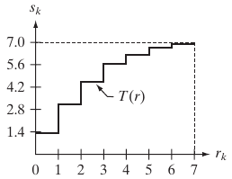
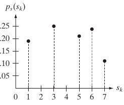
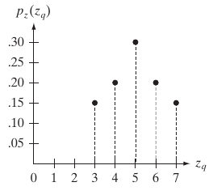
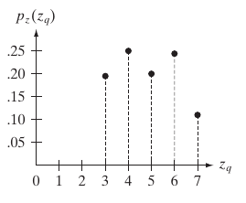
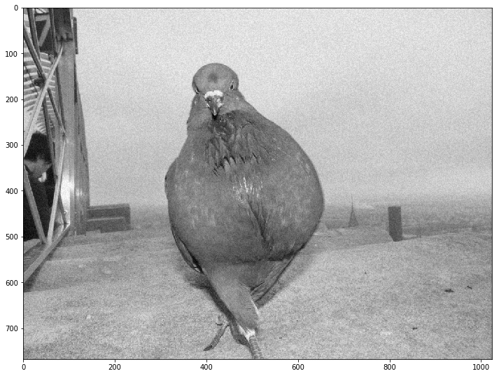
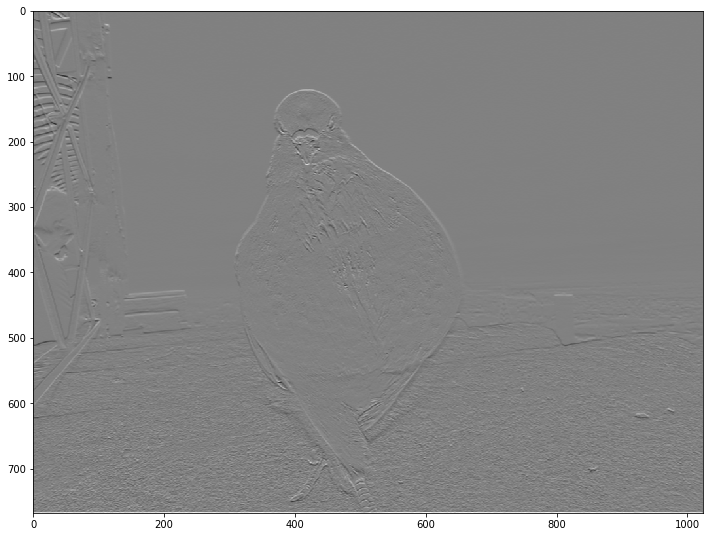
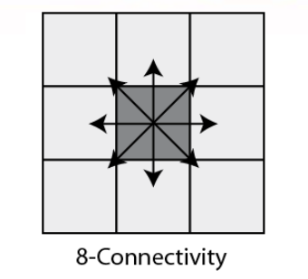

--- class: center, middle ## Image Filtering & Edge Detection --- class: left, top ## So far, we have learnt 1. Loading and accessing image pixels. -- 1. Constructing a **histogram** for the image (probability distribution). -- 1. Estimating a diagnostic parameters for a region (mean, std, variance). -- 1. Color transformations. -- 1. Fourier transform. -- 1. Histogram Equalization (converting the probability distribution in hand to a uniform distribution). --- class: left, top ## Point operators (transfer functions) #### Examples 1. Thresholding -- 1. Image negation (negative image) -- 1. Histogram equalization -- 1. Linear scaling -- 1. Nonlinear scaling -- 1. RGB to Grayscale? --- class: left, top ## Histogram Processing ### Example: Histogram Equalization -- #### Transform the histogram to a uniform one. -- <img style="width:90%" src="../../images/pdf2uniform.png"> --- class: left, top ## Histogram Processing ### Example: Histogram Equalization * Intensity image (3 bits): [0-7] * Image size = 64x64 = 4096 ### Step 1: compute the discrete PDF (histogram) -- <img style="width:40%" src="../../images/histexample.png"> <img style="width:40%" src="../../images/pdfexample.png"> --- class: left, top ## Histogram Processing ### Example: Histogram Equalization ### Step 2: compute the discrete CDF (accumulative histogram) | `i` | accumulative | accumulative x 7 | rounded | |--|--|--|--| | `s0` | 0.19 | 1.33 | 1 | | `s1` | 0.44 | 3.08 | 3 | | `s2` | 0.65 | 4.55 | 5 | | `s3` | 0.81 | 5.67 | 6 | | `s4` | 0.89 | 6.23 | 6 | | `s5` | 0.95 | 6.65 | 7 | | `s6` | 0.98 | 6.86 | 7 | | `s7` | 1.00 | 7.00 | 7 | --- class: left, top ## Histogram Processing ### Example: Histogram Equalization ### Step 2: compute the discrete CDF (accumulative histogram) <img style="width:40%" src="../../images/pdfexample.png"> ===>  --- class: left, top ## Histogram Processing ### Example: Histogram Equalization ### Step 3: use the previous table to map the pixels values --  --- class: left, top ## Histogram Processing ### Example: Histogram Matching * Intensity image (3 bits): [0-7] * Image size = 64x64 = 4096 -- * Obtain an image with an **arbitrary distribution** instead of a uniform distribution -- * Target distribution  --- class: left, top ## Histogram Processing ### Example: Histogram Matching ### Step 1: obtain the scaled histogram equalized values (previous example) * `s0` = 1 `s1` = 3 `s2` = 5 `s3` = 6 * `s4` = 7 `s5` = 7 `s6` = 7 `s7` = 7 --- class: left, top ## Histogram Processing ### Example: Histogram Matching ### Step 2: compute the discrete CDF of the target distribution | `i` | accumulative x 7 | rounded | |--|--|--| | `z0` | 0.00 | 0 | | `z1` | 0.00 | 0 | | `z2` | 0.00 | 0 | | `z3` | 1.05 | 1 | | `z4` | 2.45 | 2 | | `z5` | 4.55 | 5 | | `z6` | 5.95 | 6 | | `z7` | 7.00 | 7 | --- class: left, top ## Histogram Processing ### Example: Histogram Matching ### Step 2: compute the discrete CDF of the target distribution ===> <img style="width:40%" src="../../images/targetcdf.png"> --- class: left, top ## Histogram Processing ### Example: Histogram Matching ### Step 3: use the previous table to map the pixels values --  --- class: left, top ## Local operators (filters) ### How to filter an image #### Convolution $$\begin{equation} g(x,y)= (\omega *f)(x,y)=\sum\_{s=-a}^a \sum\_{t=-b}^b w(s,t)f(x-s,y-t) \end{equation} $$ --- class: top, left ## 2D Convolution <img style="width:100%" src="../../images/2DConv.png"> --- class: top, left ## 2D Convolution Cont'd Basic Steps are: -- 1. Flip the kernel **horizontally and vertically**. -- 2. Move over the array with kernel centered at interested point. -- 3. Multiply kernel data with overlapped area. -- 4. Sum or accumulate the output. -- * If you skip step (1), then we calculate a **Correlation**. --- class: top, left ## Image Denoising ### Original image ```python def rgb2gray(rgb_image): return np.dot(rgb_image[...,:3], [0.299, 0.587, 0.114]) image = mpimg.imread("images/pegion.jpg") image_gr = rgb2gray( image ) plt.figure("Original Image", figsize=figureSize) plt.imshow(image_gr) ``` --- ## Image Denoising ### Original image <img style="width:90%" class="center" src="../../images/week3/pegion_original.png"> --- class:top,left ## Image Denoising Cont'd ### Noisy image ```python` weight = 0.9 noisy = image_gr + weight * image_gr.std() * np.random.random(image_gr.shape) plt.figure("Noisy Image", figsize=figureSize) plt.imshow(noisy) plt.set_cmap("gray") ``` --- ## Image Denoising Cont'd ### Noisy image <img style="width:90%" class="center" src="../../images/week3/pegion_noisy.png" > --- class: top, left ### Box = mean = average filter ```python def box_filter( w ): return np.ones((w,w)) / (w*w) ``` --- class: top, left ### Box = mean = average filter -- ```python box_filter(1) ``` -- \[ 1 \] --- class: top, left ### Box = mean = average filter -- ```python box_filter(3) ``` -- | 1/9 | 1/9 | 1/9 | |-|-|-| | 1/9 | 1/9 | 1/9 | | 1/9 | 1/9 | 1/9 | --- class: top, left ### Box = mean = average filter -- ```python box_filter(5) ``` -- | 1/25 | 1/25 | 1/25 | 1/25 | 1/25 | |-|-|-| | 1/25 | 1/25 | 1/25 | 1/25 | 1/25 | | 1/25 | 1/25 | 1/25 | 1/25 | 1/25 | | 1/25 | 1/25 | 1/25 | 1/25 | 1/25 | | 1/25 | 1/25 | 1/25 | 1/25 | 1/25 | --- class: top, left ### Box = mean = average filter #### Using box filter of 1x1 --- class: top, left ### Box = mean = average filter #### Using box filter of 3x3 --- class: top, left ### Box = mean = average filter #### Using box filter of 5x5 <img style="width:90%" class="center" src="../../images/week3/pegion_box_filtered_5.png" > --- class: top, left ### Box = mean = average filter #### Using box filter of 7x7 <img style="width:90%" class="center" src="../../images/week3/pegion_box_filtered_7.png" > --- class: top, left ### Box = mean = average filter #### Using box filter of 9x9 <img style="width:90%" class="center" src="../../images/week3/pegion_box_filtered_9.png" > --- class: top, left ### Gaussian filter -- #### More robust than box filter -- ##### Higher weights to closer pixels -- Derived from 2D gaussian function $$\begin{equation} h(u,v) = \frac{1}{2 \pi \sigma^2} e^{(- \frac{u^2 + v^2}{\sigma^2})} \end{equation} $$ --- class: top, left ```python import numpy as np from scipy import signal def gaussian_kernel( kernlen , std ): """Returns a 2D Gaussian kernel array.""" gkern1d = signal.gaussian(kernlen, std=std).reshape(kernlen, 1) gkern2d = np.outer(gkern1d, gkern1d) return gkern2d ``` --- class: top, left ### Gaussian filter ```python plt.imshow(gaussian_kernel(21,5), interpolation='none') ``` -- $$ \text{size} = 21 \times 21$$ $$ \sigma = 5 $$ -- <img style="width:60%" class="center" src="../../images/week3/gaussian_kernel_21x21_std5.png" > --- class: top, left ### Gaussian filter #### size = 7x7, std = 0.5  --- class: top, left ### Gaussian filter #### size = 7x7, std = 1 --- class: top, left ### Gaussian filter #### size = 7x7, std = 1.5 <img style="width:90%" class="center" src="../../images/week3/pegion_g7_filtered_std15.png" > --- class: top, left ### Gaussian filter #### size = 7x7, std = 2 <img style="width:90%" class="center" src="../../images/week3/pegion_g7_filtered_std20.png" > --- class: top, left ### Gaussian filter #### size = 7x7, std = 2.5 <img style="width:90%" class="center" src="../../images/week3/pegion_g7_filtered_std25.png" > --- class: top, left ### Median filter (nonlinear) -- <img style="width:70%" class="center" src="../../images/week3/median.gif"> -- * very efficient in removal of salt and pepper noise. --- ### Median filter (nonlinear) #### Let's add some salt and pepper noise -- ```python def salt_n_pepper(img): salt_pepper = np.random.random(img.shape) * 255 pepper = salt_pepper < 30; salt = salt_pepper > 225; img[pepper] = 0 img[salt] = 255 return img ``` --- ### Median filter (nonlinear) #### Original image <img style="width:90%" class="center" src="../../images/week3/pegion_original.png"> --- ### Median filter (nonlinear) #### Original image ```python image_noisy_salt_pepper = salt_n_pepper( image_gr ) ``` <img style="width:70%" class="center" src="../../images/week3/pegion_noisy_sp.png"> --- ### Median filter (nonlinear) #### Filtation with 3x3 median ```python ndimage.median_filter(image_noisy_salt_pepper,(3,3)) ``` <img style="width:90%" class="center" src="../../images/week3/pegion_median_filtered3.png"> --- ### Median filter (nonlinear) #### Filtation with 5x5 median ```python ndimage.median_filter(image_noisy_salt_pepper,(5,5)) ``` <img style="width:90%" class="center" src="../../images/week3/pegion_median_filtered5.png"> --- ### Median filter (nonlinear) #### Filtation with 7x7 median ```python ndimage.median_filter(image_noisy_salt_pepper,(7,7)) ``` <img style="width:90%" class="center" src="../../images/week3/pegion_median_filtered7.png"> --- class: top, left ## Edge detection kernels * Edges represents the object boundaries. -- * Edge detection is a very important preprocessing step object detection --- ### Prewitt operator For Ix(x,y) and Iy(x,y) ```python prewitt_h = np.array([[ -1 , 0 , 1 ] , [ -1 , 0 , 1 ] , [ -1 , 0 , 1 ] ]) prewitt_v = prewitt_h.transpose() ``` --- ## Edge detection kernels ### Prewitt operator Horizontally... ```python image_prewit_h = signal.convolve2d( image_gr , prewitt_h ,'same') ``` -- <img style="width:90%" class="center" src="../../images/week3/pegion_prewit_h.png"> --- ## Edge detection kernels ### Prewitt operator Vertically... ```python image_prewit_v = signal.convolve2d( image_gr , prewitt_v ,'same') ``` --  --- class: top, left ## Edge detection kernels Cont'd ### Sobel operator For Ix(x,y) and Iy(x,y) ```python sobel_h = np.array([[ -1 , 0 , 1 ] , [ -2 , 0 , 2 ] , [ -1 , 0 , 1 ]]) sobel_v = sobel_h.transpose() ``` --- ## Edge detection kernels ### Sobel operator Horizontally... ```python image_sobel_h = signal.convolve2d( image_gr , sobel_h ,'same') ``` -- <img style="width:90%" class="center" src="../../images/week3/pegion_sobel_h.png"> --- ## Edge detection kernels ### Sobel operator Vertically... ```python image_sobel_v = signal.convolve2d( image_gr , sobel_v ,'same') ``` -- <img style="width:90%" class="center" src="../../images/week3/pegion_sobel_v.png"> --- ## Edge detection kernels ### Sobel magnitude and phase -- ```python def gradient_sobel( img ): image_sobel_h = signal.convolve2d( img , sobel_h ,'same') image_sobel_v = signal.convolve2d( img , sobel_v ,'same') phase = np.arctan2(image_sobel_h , image_sobel_v) * (180.0 / np.pi) # Assign phase values to nearest [ 0 , 45 , 90 , 135 ] phase = ((45 * np.round(phase / 45.0)) + 180) % 180; gradient = np.sqrt(image_sobel_h * image_sobel_h + image_sobel_v * image_sobel_v) return gradient, phase ``` --- ## Edge detection kernels ### Sobel magnitude and phase <img style="width:90%" class="center" src="../../images/week3/pegion_sobel_mag.png"> --- class: top, left ## Edge detection kernels Cont'd ### Laplacian It is an approximation of second order derivative that defines zeros crossing. For Example 3x3 laplacian is : <img style="width:25%" src="../../images/lapl.png"> Laplacian usually is applied after gaussian smoothing. So LOG refers to laplacian of gaussian. --- class: top, left ## Gradient magnitude and direction Gradient magnitude is given by $$ \begin{equation} I_{xy} = \sqrt{I_x(x,y)^2 + I_y(x,y)^2} \end{equation} $$ and Gradient direction: $$ \begin{equation} I_{\theta} = tan^{-1}(\frac{I_y(x,y)}{I_x(x,y)}) \end{equation} $$ --- class: left, top ## Canny edge detection algorithm It was developed by [John F. Canny](https://en.wikipedia.org/wiki/John_Canny) in 1986. **Stages** 1. **Smoothing for noise removal.** 2. Finding Gradients. 3. None-maximum suppression. 4. Double Thresholding. 5. Edge Tracking by hysteresis. --- class:top ,left ## Smoothing The first stage in canny edge detection algorithm is smoothing to remove noise that may cause false edges. Kernel used in this step is 5x5 gaussian kernel with $\sigma = 1.4$ and that it <img style="width:65%" src="../../images/guassCanny.png"> --- class: top, left ##Smoothing Cont'd Original Image <img style="width:90%" src="../../images/Lines.jpg"> --- <img style="width:100%" src="../../images/guassianBlur.jpg"> --- class: left, top ## Canny edge detection algorithm **Stages** 1. Smoothing for noise removal. 2. **Finding Gradients.** 3. None-maximum suppression. 4. Double Thresholding. 5. Edge Tracking by hysteresis. --- class:top , left ### Finding Gradients using sobel operator in both x and y . <img style="width:90%" src="../../images/GradientMag.jpg"> --- class: left, top ## Canny edge detection algorithm **Stages** 1. Smoothing for noise removal. 2. Finding Gradients. 3. **None-maximum suppression.** 4. Double Thresholding. 5. Edge Tracking by hysteresis. --- class: top, left ### None-maximum suppression Compare pixel with pixels in the gradient directions and Suppress if not max. <img style="width:85%" src="../../images/GradientDir.jpg"> --- class: top, left ### None-maximum suppression Cont'd Direction must be quantized to 8 directions or angles to use 8-Connectivity. <img style="width:85" src="../../images/CannyEdgeWheel.gif">  --- class: top, left ### None-maximum suppression Cont'd The result of this stage would be an edge image with thin edges. <img style="width:90%" src="../../images/none-max-supp.jpg"> --- class: left, top ## Canny edge detection algorithm **Stages** 1. Smoothing for noise removal. 2. Finding Gradients. 3. None-maximum suppression. 4. **Double Thresholding.** 5. Edge Tracking by hysteresis. --- class: top, left ### Double thresholding we globally eliminate weak edges. We have two threshlods $T_l$ and $T_h$ selected by user. ```python if image[x,y] < TL: image[x,y] = 0 elif image(x,y) > TH: image[x,y] = 1 ``` --- class: top, left ### Double thresholding Cont'd <img style="width:90%" src="../../images/double-thr.jpg"> -- What about pixels with in-between values ? --- class: left, top ## Canny edge detection algorithm **Stages** 1. Smoothing for noise removal. 2. Finding Gradients. 3. None-maximum suppression. 4. Double Thresholding. 5. **Edge Tracking by hysteresis.** --- class: top, left ### Edge tracking by hysteresis For in-between $T_l$ and $T_h$ check neighbors keep it if strong else Suppress. <img style="width:95%" src="../../images/FinalCanny.jpg"> --- class: top, left ## Demo ```bash $ git clone https://github.com/sbme-tutorials/cv-week4-demo ``` ## Useful links * [matplotlib gallery](https://matplotlib.org/gallery/index.html) * [scikit-image examples](http://scikit-image.org/docs/dev/auto_examples/) --- class: center, middle # Thanks